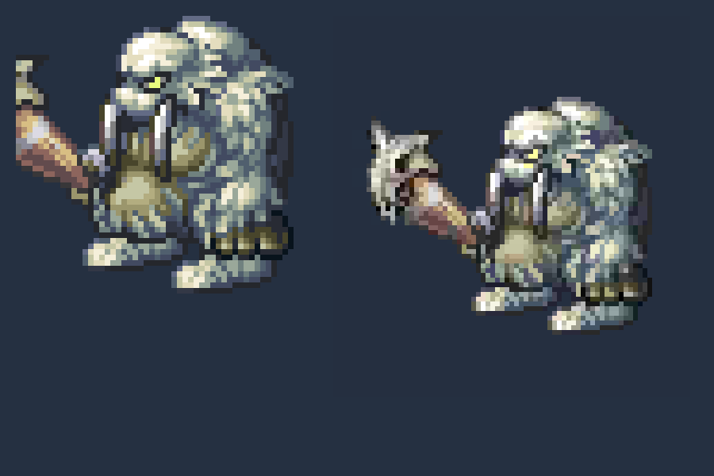
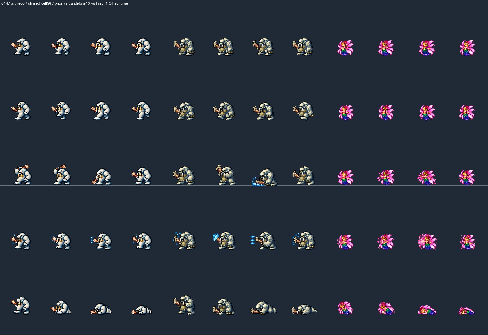

Lông xám ngà từng lớp, mặt tối/mắt vàng, nanh ngà dài và rìu thô cán gỗ. Bản trước giữ lại để so. 55 loài khác đã được chủ game duyệt.
Art attempt13 đã được chủ game duyệt ngày21/10/2026; chưa runtime. Cùng mục tiêu hiển thị idle190px quy chiếu đã duyệt. Native packed140.25px (trước170px); dùng factor1.355 và origin tiếp đất được đăng ký thủ công từng pose, không đổi scale để bù đăng ký nguồn. Không gọi đây là cùng mật độ pixel hoặc atlas170px.
Profile/hash/giới hạn · Atlas native96/192 và metadata · Roster đã duyệt

